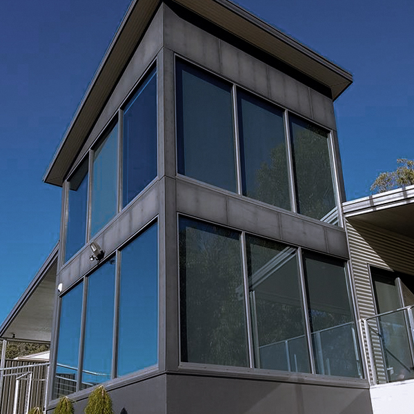
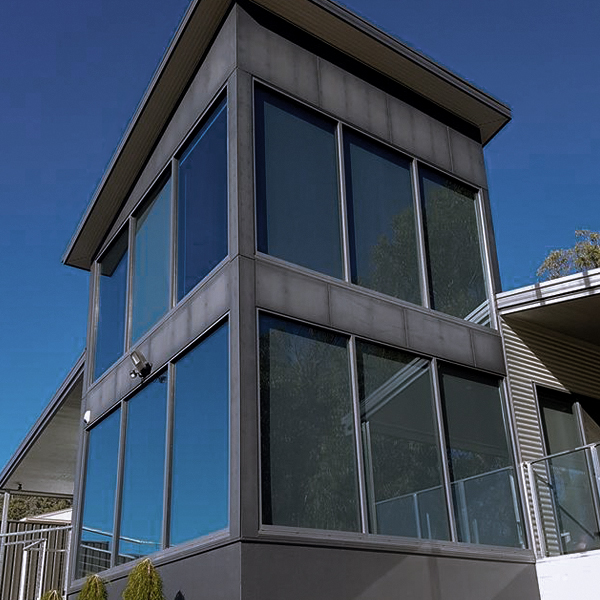

Decrease Heat
Today’s window film is extremely efficient at controlling the effects of solar energy.
Kustom Tinting
At Kustom Tinting, we know that window tinting can either be a gift or a curse for some people. Window tinting can give a vehicle that extra edge. On the other hand, there are state laws, of every state, that prohibit certain types and shades of window tint. However, for those businesses like Kustom Tinting that customise vehicles, it is a fairly simple process that will allow you to get the most from your investment. We understand the laws and will make sure that your tinted windows are not in violation of state regulations. We also understand that for many people, having tinted windows is a cool way to stand out from the crowd as well as to fit in. Be careful and drive your vehicle with pride and common sense.

It’s no secret that you can get a sunburn while driving long distances in your car. So it’s important to make sure you’re always protected from prolonged exposure to the sun by applying sunscreen and wearing sun smart clothing. Getting your car windows tinted can also protect you from skin damage as they substantially reduce the amount of UV radiation that’s transmitted into your car. All of Kustom Tinting’s exclusive films block up to 99% of UVA and UVB rays and are certified by the Australian Radiation Protection and Nuclear Safety Agency


your home stays cooler during the summer and cosier in winter, and you’ll see a clear difference in your power bills. You’ll also see a dramatic reduction in UV that could otherwise fade your carpets, floorboards and furniture. For ultimate privacy, you can choose a reflective film that turns your windows into a mirror, so those on the outside cannot see within. Or we have lighter shades of film that still protect from the damage caused by UV rays on your skin and also furniture, but don’t alter the appearance of your home.
When you think of window tint, you likely think of dark or even blacked-out automobile windows. However, tinting windows on homes and offices can be beneficial, too. In fact, window tint can even protect your business in a few different ways, which means tinting your windows is typically a very wise investment.

Today’s window film is extremely efficient at controlling the effects of solar energy.
Shattering glass is a hazard when accidents happen, or when vandalism or environmental effects cause breakage. The protection offered by window films can provide a functional "safety net" that will make you feel secure.
Window film blocks 99% of UV rays, providing a sunscreen while reducing solar heat. Minimizing these causes of fading protects your valuable furnishings.
A smart, uniform look improves the appearance to the exterior of your automobile. Window film products can create this gratifying look.
There is no need to put up with annoying glare. Whatever the cause - direct sun, reflections from snow, water, or surroundings.
Black Armor stops 99% UV "A" and UV "B" thus resulting in extra protection for your family and loved ones.
Don’t live with temperature imbalances caused by areas of extreme sun or shade, which can limit use of interior space. Window film can remedy this problem and reduce air conditioning costs.

Engineered for Vision, Comfort & Thermal Protection..
The solar filtering technology of Kustom Tinting Window Films makes a distinct difference in maintaining the look and comfort of any home or building. Whether presenting a uniform appearance from the outside that is architecturally impressive, or helping to preserve the furnishings, product displays and other valuables within, Kustom Tinting range of window films present a good opportunity to save, from the top to the bottom line.
Kustom Tinting window film is a protective microthin layer of treated polyester that is adhered to the inside surface of existing glass. Solar control versions use metallised or advanced ceramic coatings that act as an insulating barrier and are primarily designed to shield your home or building windows from intense heat, glare and UV rays from the sun.
There are many excellent reasons to choose Kustom Tinting...
decrease heat... energy efficient... improve comfort... reduce glare... enhance appearance... daytime privacy... uv ray protection... reduce fading... increase safety... easy installation... assured quality...
Kustom Tinting window films are available in a variety of styles to meet many different needs, from energy control, heat & glare reduction to privacy or enhanced safety.


 
